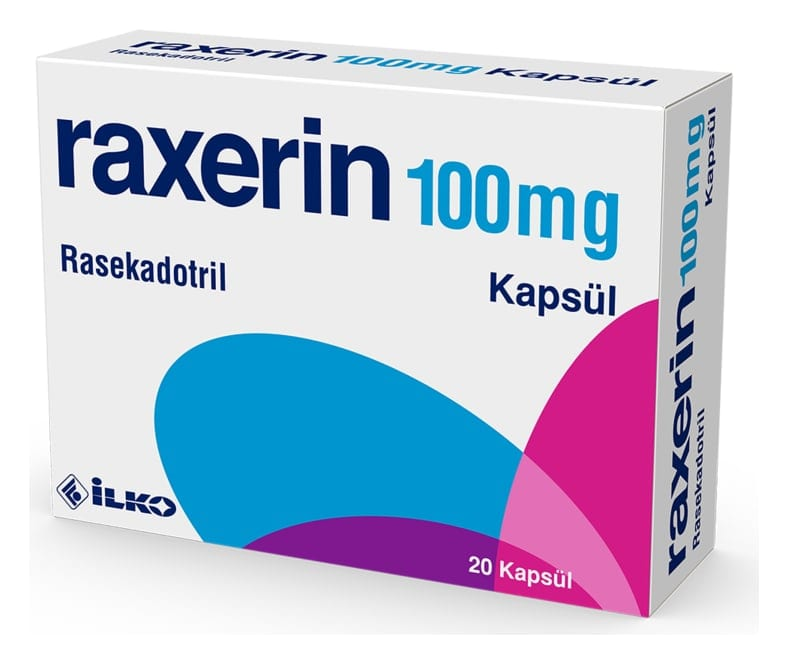

Raxerin 100 mg Kapsül, 20 Kapsül

Ne için kullanılır
KT · Bölüm 1RAXERİN opak, krem renkli kapsül gövdesi ve kapsül kapağından oluşan sert jelatin kapsüllerin içerisinde beyaz renkli granüler yapıda toz şeklindedir. Her bir kapsül etkin madde olarak 100 mg rasekadotril içerir. 20 tabletlik blister ambalajlarda kullanıma sunulmuştur.
RAXERİN ishal tedavisinde kullanılır.
RAXERİN; yetişkinlerde, nedensel tedavinin mümkün olmadığı kısa süreli ishal tedavisi için kullanılır. RAXERİN, nedensel tedavi ile birlikte tamamlayıcı tedavi olarak kullanılabilir.